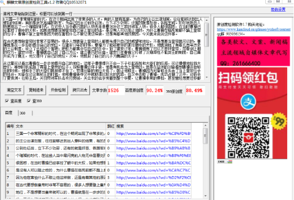

《三国演义》中曹操拥有着权力,为什么他不夺取皇位呢?
三国一个非常精彩的时代，在这个期间出现了非常多的人才。有的人智商高超，为自己的主公出谋划策，往往能够达到出人意料的结果，有的是武艺高强的将军，为自己的主公到处征战，立下不少功劳，还有的就是奸臣、各路军阀。形形色色的人物展现出了一个璀璨的时代，在这些人当中最闪亮的人物无非是曹刘孙这三家的领军人物。很多人都很困惑，在当时曹操已经掌控了朝中的大权，如果他想要废掉皇帝自己登上皇位的话，是没有人可以阻止他的，为什么曹操在临死前都不踏上皇帝的位子，曹操不登上皇帝是因为他在害怕什么不敢让他这样做，还是有着其他的原因，今天就来说说这件事。
在古代要想做皇帝时非常不容易的，很多人想要登上皇帝的人都要先提升自己的威望和地位，不是想要当皇帝就可以的，曹操就是在一步步的提升自己的地位。在建安13年的时候，曹操为了能够更好的掌控朝中的大权，他就废除了有着几百年历史的三公制度，设立了丞相这个官职，把权力都集中在自己的手中。到了建安17年，曹操拥有了可以不参拜皇帝、带着剑上朝的权力。建安18年，曹操就自己封了自己为公，建立曹氏的宗庙。建安21年曹操又打破了汉朝异性不能封王的制度，自己晋升成为了魏王，他又提升了自己的地位。次年，他就封了自己的儿子为魏国的太子。
从这里可以看出曹操在一步步地提升自己的地位，这样子慢慢提升不会一下子引起百姓和大臣们的反感，可以慢慢地拉拢大臣们，等到时机成熟了再登上皇帝的位子。按照曹操这样子做，他是有机会当上皇帝的。但是在益州的刘备看到曹操开始称王的时候，他和手下的大臣们就按捺不住了，觉得刘备的地位太低了，就让他称王，曹操因为刘备称王失去了当上皇帝位子的机会。刘备在还没有称王的时候，他和曹操争夺汉中就取得比较大的优势，在汉中击败了曹操，成功占据了汉中，还斩杀了夏侯渊。在称王后，关羽带领军队去攻打樊城，关云长的名字传播到整个华夏，让曹操非常的惧怕，甚至曾经想要迁移都城，逃避关二哥的兵锋。
这个时候的刘备军团声势非常浩大，有攻打中原腹地的迹象，很多人都觉得汉室能够恢复到往日的辉煌，耿纪因为不满曹操又造了反，曹操因为害怕自己称帝的话引起更大的叛乱，他就没有登上了皇帝，做出一副忠臣的样子。
当然曹操不当皇帝还有其他的原因，有的人说是曹操的志向决定的，他一直在坚持的自己最后的一个底线，那就是他年轻时的梦想。年轻的时候曹操希望自己在死后能在墓碑上刻着征西大将军这个墓志，能够像冠军侯一样打击外族。刚开始的时候曹操对汉室是非常忠心的，希望能凭借着自己的力量挽救汉室，但是随着时间久了，他被这个乱世抹去了自己的激情，成为了一个奸雄，对汉室朝廷也没有了以前那样的忠心。
也有可能曹操认为虚假的名声并不重要，只要掌控了朝中的大权，有没有当上皇帝也是一样的，曹操他不在乎这些虚假的名声。还有可能是因为年龄的原因，在公元219年，曹操这个时候已经65岁了，在古代这个年龄已经是高龄了，很少人能够活到这个岁数，加上曹操时不时的会头痛，他觉得自己可能并没有多长的时间，称帝也没有太多大的意义了。人到要死了，很多事情都会想得开，对权力欲望也不是非常强烈。不称帝的话，还不会留下谋朝串位的骂名，所以就没有当上了皇帝。
小编认为曹操没有当上皇帝是有很多种原因的，三国到现在的时间是非常长的，当时曹操是怎么想的没有人知道，只能依靠着后人去猜测。或许曹操他是忠于汉室的，在死前都不当皇帝，是因为他一直坚持着自己心中的底线。也或许是因为其他的原因，让他不能坐上皇帝这个位子。不过不难看出，曹操对汉室的变化在各个阶段都是不同的，在董卓祸乱汉室江山的时候曹操敢刺杀他，在攻打董卓时各镇诸侯都不带兵去追赶董卓，曹操自己带着军队去追，这些地方都可以看出当时的曹操对汉室还是有一些忠心的。
